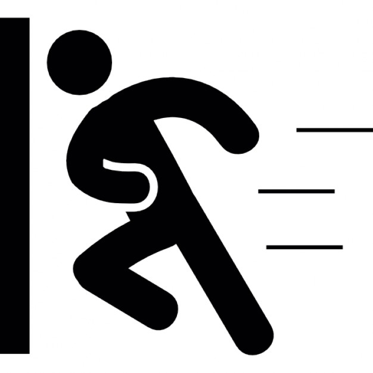

<link rel="import" href="/lib/polymer/polymer.html">
<link rel="import" href="/lib/iron-input/iron-input.html">
<link rel="import" href="/lib/paper-tabs/paper-tabs.html">
<link rel="import" href="/lib/iron-pages/iron-pages.html">

<dom-module id="onion-lockapp">
	<template>
		<style>
			paper-tab {
				background-color: #5cd65c;
				width: 50%;
				color: white;
				font-size: 20pt;
			}
			iron-pages {
				height: 100%;
			}
			button {
				width: 50%;
				height: 100%;
				margin-right: -4px;
				border: none;
				background-color: white;
			}
			div {
				height: 100%;
			}
			img {
				max-height: 50%;
				max-width: 50%;
				pointer-events: none;
			}
			#lock {
				background-color: #f1c11e;
			}
			#forcelock {
				background-color: #828e9e;
			}
		</style>
	
		<div id="container">
			<paper-tabs selected="{{page}}">
				<paper-tab on-click="_changePage">{{_getStatus(isLocked)}}</paper-tab>
				<paper-tab on-click="_changePage"></img></paper-tab>
			</paper-tabs>

			<iron-pages selected="{{page}}">
				<div>
					<button id="lock" on-click="_run"></img></button>
					<button id="unlock" on-click="_run"></img></button>
				</div>

				<div>
					<button id="forcelock" on-click="_run"></img></button>
					<button id="forceunlock" on-click="_run"></img></button>
				</div>
			</iron-pages>
		</div>
	</template>

	<script>
		(function () {
			"use strict";

			var _changePage = function(x) {
				if(this.page) {
					this.page = "1";
				} else {
					this.page = "0";
				}
			};

			var _run = function(x) {
				onionConsole.getService('onion-ubus-provider', (function (ubus) {
					ubus.request('onion-lock', x.target.id, {}, (function (data) {}).bind(this));
				}).bind(this));

				if(x.target.id === 'lock' || x.target.id === 'forcelock') {
					this.isLocked = true;
				} else {
					this.isLocked = false;
				}
			};

			var _getStatus = function(x) {
				if(x) {
					return "Locked";
				}
				return "Unlocked";
			};

			Polymer({
				is:"onion-lockapp",
				_changePage : _changePage,
				_run : _run,
				_getStatus : _getStatus,
				properties: {
					isLocked: {
						type: Boolean,
						value: false
					},
					page: {
						type: String,
						value: "0"
					}
				}
			});
		})();
	</script>
</dom-module>